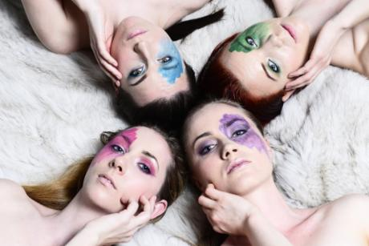

VOCAL FOLK HOP AUS FINNLAND
|  | |
Johanna Kyykoski
Piia Säilynoja
Venla Ilona Blom
Sini Koskelainen
Am 5. Mai 2017 um 19.30 Uhr
Kulturhaus Süderelbe
Stadtteilsaal BGZ Süderelbe
Am Johannisland 2
21147 Hamburg
Tel. 040-7967222
info@kulturhaus-suederelbe.de
Tuuletar singen, komponieren und treten seit 2012 gemeinsam auf dabei haben sie ihren eigenen hypnotisierenden Sound kreiert. Tief in der finnischen Sprache und dem musikalischen Erbe von Suomi (= Finnland) verwurzelt, nehmen sie aber auch musikalische Einflüsse aus der ganzen Welt auf, begeistern das Publikum aller Altersgruppen und Kulturen mit ihrem mitreißenden Temperament. Ihrer Musik haben sie ein eigenes Markenzeichen verliehen: Finnischer Folk Hop. Ihre ausdrucksstarken und exotischen Stimmen, das Beatboxingi und ihre exquisite Bühnenpräsenz lassen kein Publikum kalt. Ihr Ziel ist es die Multidimensionalität der menschlichen Stimme zu zeigen.
www.tuuletar.com
Eintritt: € 10
| Im Vorverkauf sind Karten ab sofort im Kulturhaus Süderelbe erhältlich: Reservierung unter Tel. 040-7967222 oder Email an info@kulturhaus-suederelbe.de. Karten im Vorverkauf ab 06. März auch im FitHus (BGZ), an der Theaterkasse EKZ* Neugraben und im Ticketshop* Phoenix-Center Harburg erhältlich. (* Zzgl. Gebühr) Abendkasse: € 13 |
| Eine Veranstaltung in Kooperation mit der Deutsch-Finnischen-Gesellschaft (DFG) mit freundlicher Unterstützung durch Finnische Botschaft in Berlin und Suomi Seura r.y.  |